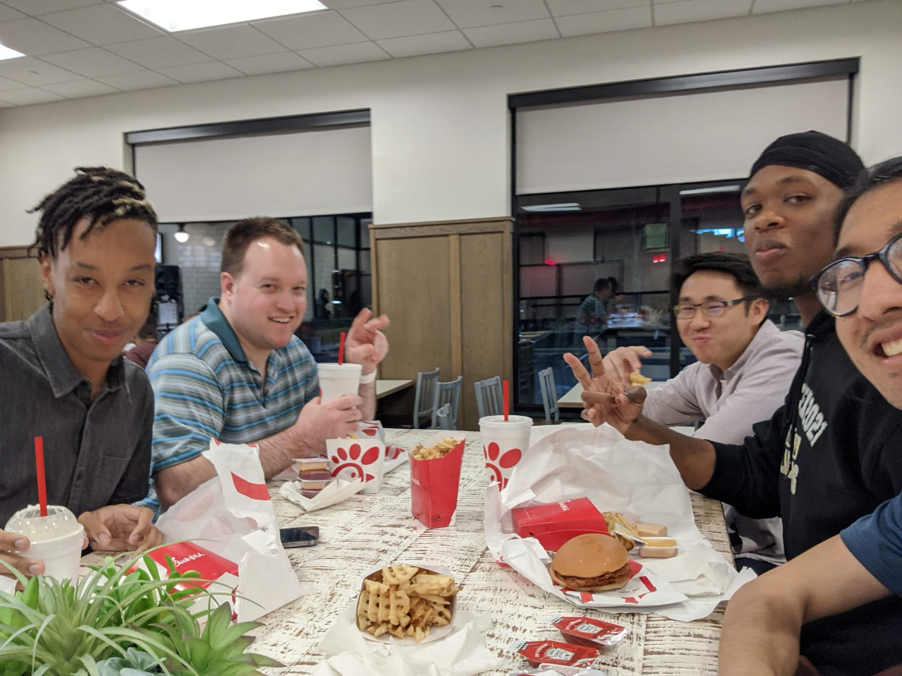
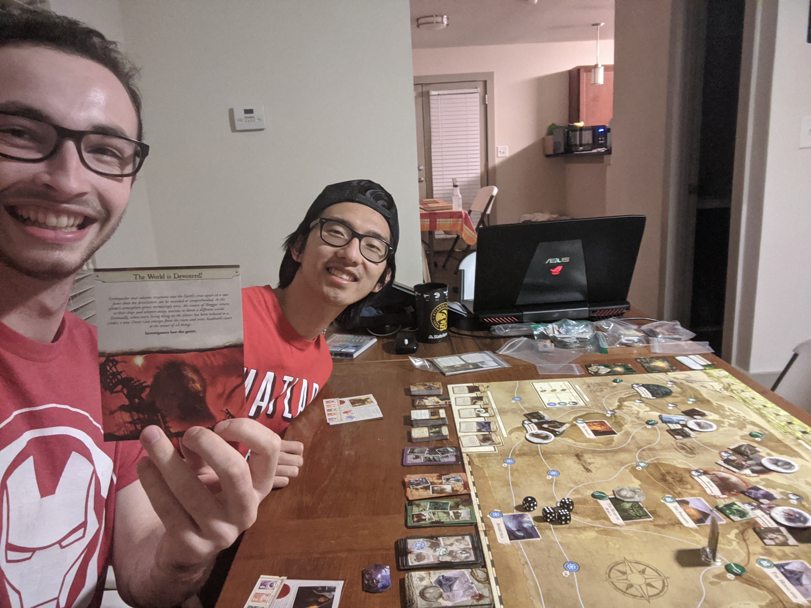
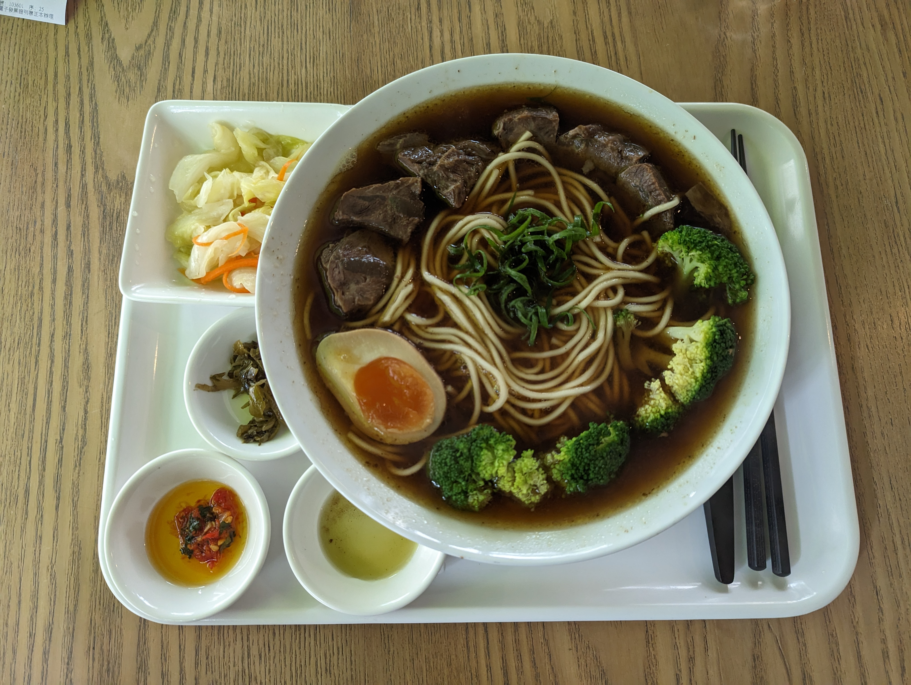

Welcome to my page! I've spent some time documenting my work, my interests, and random things about myself here. I hope you find what your looking for. Please do look around!
Who is Bill?
I am just a Bill... on capital hill. Haha maybe u didn't get it, it's fine. Everything's fine...
Personal Qualities
I am a versitile person who brings value. I strive to create products, experiences, and places where people feel loved. My concern is to make sure that end users of my work and my coworkers feel cared for by my efforts. I work to serve others as Jesus serves me whether that means leading a team, learning new skills, or taking a back seat.
Problem Solving
- problem-based investigation
- thoughtful questioning
- technical detail aptitude
- time dependency awareness
Learning
- resourceful
- quick to catch on
- persevering
- ambitious
Authenticity
- honest
- confront conflict
- verbalize team dynamics
- precise communication
Social Capacity
- gauges team health
- invests in coworkers
- community building
- choose and bring joy
How did I end up working in geospatial data analysis?
I enjoy working with data, all types of data. I got into geospatial data because I started out as a mechanical engineer and wanted to try out civil, but they didn't let me, so I found the next closest thing they would let me try without switching majors which was city planning at GT. There I found that property data was super interesting both morally and technically and have been going at it ever since.
Funnily, I actually hated coding to start with. I first coded in Physics 2 Lab using some python package to model particles moving. It was only later through a MATLAB course, doing internal combustion engine data analysis, and programming excel macros for a shipping form at my mechnical engineering internship that I discovered I liked working with data and possibly coding was fun sometimes? While I am now a coding man, I still do miss CAD. CAD and design were a big part of my academic and career until I switched from mechanical engineering to data analysis.


After graduating with my mechanical engineering bachelor's with a minor in sustainable cities from Tech, I tried more seriously investing into my data and city planning skills and graduated in the first ever cohort of the Master of Science Urban Analytics Program at Tech, which was a new partnership between the City Planning, ECE, CS, and ISYE schools at GT. It's a newish field, but if you haven't heard of it, it's basically a data analytics/science degree with a focus on application to cities and geospatial data.
I am very big on making sure people are doing well and that teammates feel generally good doing their work. I can play lots of different roles on a team, but usually I wait a bit first to see how I can fit in well before assuming a role more heavily in a working environment. I try to always think about how I can serve people best.
I am also big on Jesus, as He's done and is doing more for me than I can ever thank Him for. Loving Him and loving people are my biggest goals every day I wake up. If it doesn't look like it, remind me of that haha(I can forget and can always be loving better). As a result, I tend to spend a lot of my freetime with Renovation church people. I lead the community partners team at our church, so if you are involved with the community or want to get involved don't be afraid to ask me! If you ever wanna talk about Jesus for any reason, I'd love to talk with you. Here's a pic of some of my church fam. They're the best.
Primary Experiences
Many of my formative experiences occured with these orgs
Hobbies :)
My friend and I cycling to Alabama from Symrna, GA

Favorite Board Games(BGG Profile): Ticket to Ride, Concordia, Jungle Speed, Bang!, Lovecraftian

Favorite Foods: Taiwanese Beef Noodle Soup, Ten-don, Saag Paneer, Chorizo Sopes, Solid Burger, Neapolitan pizza, Chick-fil-A Milkshake, Cheeze-Its

Favorite Games: Overwatch, Witcher 3, Risk of Rain 2
Favorite Animes(MAL profile): Hunter x Hunter, Psycho-Pass, ReZero Season 2, Haikyuu, Cowboy Bebop, Suzume no Tojimari
Favorite Breweries: Three Taverns, Orpheus